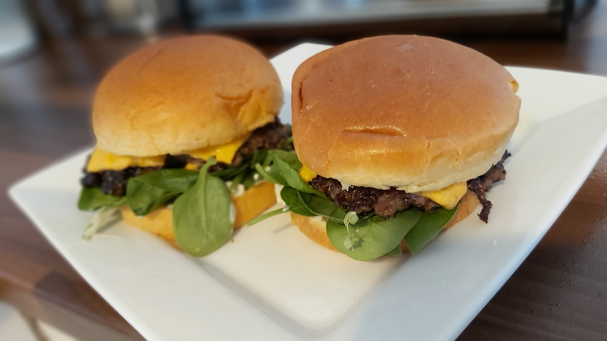

Home
A Jolly Good Burger

This is a burger of my own creation, this is the first time the method has ever been shared
Ingredients
- 250g of lean minced beef
- 100g of spinach
- Extra virgin olive oil
- 2 slices of American cheese
- Garlic and herb mayonnaise
- 2 brioche buns
- Salt
- Pepper
- The secret ingredient; OXO beef stock cubes
That's right, the secret ingredient is OXO Beef stock cubes.
They give the meat an extra kick of flavour that's hard to beat.
Method
- Heat a dry pan on the highest heat
- Form 2 balls from the mince, then flatten them out gently into patties
It is important to not overwork the mince
- Season the patties with salt, pepper and the OXO cube
- Use a basting brush, or your hands if you're feeling whimsical,
and coat both sides of the patties in extra virgin olive oil
- Is that pan at optimum temperature?
If it is, time to drop the patties onto it
You should get a nice sear almost instantaneously,
we can't check though as the burger needs to brown
- Toast the brioche buns on level 2
- Once the buns are down plop some garlic and herb mayonnaise onto the bottom bun
- Put the spinach directly onto the mayonnaise
You may be wondering why we have done it in this order
It is so the mayonnaise can keep the spinach from exiting the burger
- After 5 minutes the, flip the burgers over
They should be nicely browned
- After two minutes of cooking on the other side place the cheese on top
- Now it's just a case of waiting for the cheese to melt into the burger
like a... melted cheese onto a burger
- Once the cheese is melted, check the bottom of the patty is browned
and place it on the bottom bun
- Place the top bun on the burger
- Eat the burger
Mission accomplished